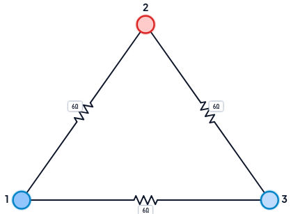
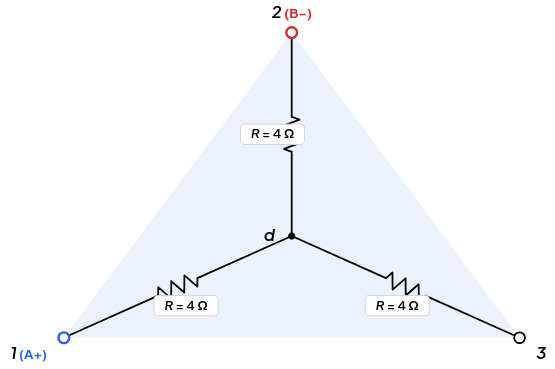
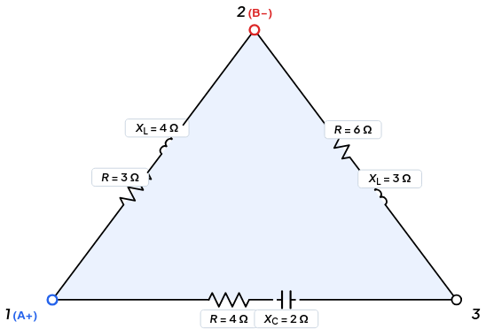
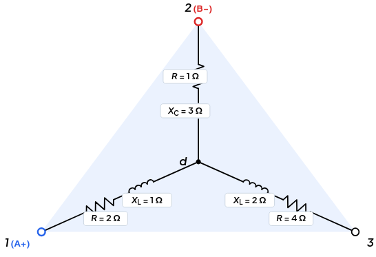
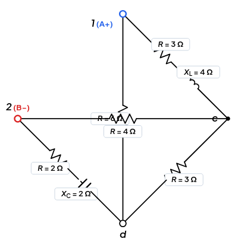
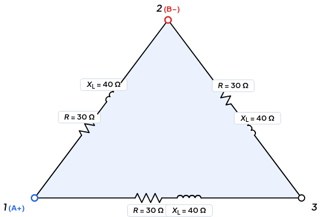
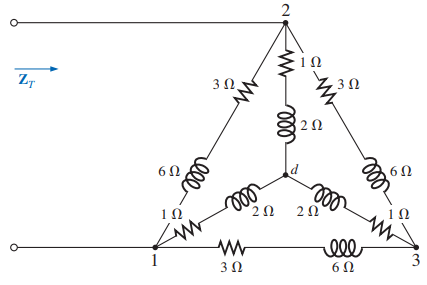

%%{init: {
'theme': 'base',
'themeVariables': {
'primaryColor': '#ffffff',
'primaryTextColor': '#1e293b',
'primaryBorderColor': '#94a3b8',
'lineColor': '#64748b',
'fontSize': '45px',
'nodePadding': '20px',
'fontFamily': 'system-ui, -apple-system, sans-serif'
}
}}%%
flowchart TD
IN["<div style='padding: 10px 20px;'>⚡ Circuito de estudio</div>"] --> Q1{"¿Admite reducción directa<br>en serie o paralelo?"}
Q1 -- Sí --> T_DY_1[["Reducción Serie / Paralelo"]]
Q1 -- No --> Q2{"¿Presenta configuración Δ o Y?"}
Q2 -- Sí --> T_DY[["Transformación Δ ↔ Y"]]
Q2 -- No --> M_GEN["Análisis Sistemático (Mallas o Nodos)"]
T_DY --> CONT(["Continuar simplificación"])
T_DY_1 --> CONT
%% Estilos elegantes
style IN fill:#e9c5f4ff,stroke:#0f17d2a,color:#f8fafc,stroke-width:1px
style CONT fill:#f0fdf4,stroke:#16a34a,color:#14532d,stroke-width:1.5px
style Q1 fill:#f8fafc,stroke:#64748b,color:#0f172a,stroke-width:1.5px
style Q2 fill:#f8fafc,stroke:#64748b,color:#0f172a,stroke-width:1.5px
style T_DY fill:#eff6ff,stroke:#2563eb,color:#1e40af,stroke-width:1.5px
style T_DY_1 fill:#eff6ff,stroke:#2563eb,color:#1e40af,stroke-width:1.5px
style M_GEN fill:#f8fafc,stroke:#cbd5e1,color:#64748b,stroke-width:1px
Transformación Delta – Estrella (Δ ↔︎ Y) en Corriente Alterna
Conversión de impedancias complejas, topologías en puente, doble T y calculadora interactiva
Métodos de Redes
Delta-Estrella
Impedancia Compleja
Circuitos CA
Formulación analítica rigurosa y herramienta de cálculo para la conversión bidireccional Delta-Estrella con impedancias complejas en régimen permanente sinusoidal.
Transformación Bidireccional \Delta \leftrightarrow \text{Y} en CA
Simplificación de redes complejas mediante equivalencia de impedancias en terminales.
Una red eléctrica puede contener conexiones que no admiten una reducción directa mediante combinaciones de serie y paralelo. Cuando una parte de la red presenta una topología Delta (\Delta) o Estrella (\text{Y}), podemos transformar su representación para obtener una red equivalente que resulte más conveniente para el análisis.
Note⚡ Idea central
La transformación \Delta \leftrightarrow \text{Y} no tiene como objetivo cambiar físicamente el circuito.
Su propósito es cambiar la representación de una red manteniendo su comportamiento eléctrico visto desde sus terminales.
\boxed{ \text{Red original} \;\longrightarrow\; \text{Transformación equivalente} \;\longrightarrow\; \text{Red más fácil de analizar} }
1 ¿Qué problema resuelve la transformación \Delta \leftrightarrow \text{Y}?
En el análisis de circuitos, muchas redes pueden simplificarse directamente mediante: Serie \leftrightarrow Paralelo
Sin embargo, existen configuraciones donde estas reglas no pueden aplicarse de manera inmediata.
Cuando tres impedancias forman una conexión entre tres nodos en forma de: \boxed{\Delta}
Cuando tres impedancias convergen en un nodo común:\boxed{\text{Y}}
En estos casos, una transformación apropiada puede convertir una topología difícil en otra que permita continuar el análisis mediante técnicas más sencillas.
1.1 La idea de fondo
\boxed{ \text{topología difícil} \;\rightarrow\; \text{topología equivalente} \;\rightarrow\; \text{simplificación} \;\rightarrow\; \text{análisis} }
Por eso, \Delta \leftrightarrow \text{Y} es una herramienta de simplificación de redes, no un procedimiento que deba aplicarse automáticamente cada vez que aparezca un triángulo o una estrella.
2 ¿Qué son las configuraciones \Delta y \text{Y}?
2.1 Configuración Delta (\Delta)
En una red Delta, tres impedancias están conectadas entre tres pares de terminales:
A-B,\qquad B-C,\qquad C-A
La red forma un lazo cerrado entre tres nodos.
2.2 Configuración Estrella (\text{Y})
En una red Estrella, tres impedancias se conectan a un nodo común:
A-O,\qquad B-O,\qquad C-O
donde O representa el nodo central de la estrella.
TipNo confundir topología con transformación
Una carga puede estar físicamente conectada en \Delta o en \text{Y}.
Pero una transformación \Delta \leftrightarrow \text{Y} puede utilizarse como herramienta matemática de análisis, aunque el circuito físico no se modifique.
Por tanto:
\boxed{ \text{transformar la representación} \neq \text{reconstruir físicamente el circuito} }
3 ¿Por qué son importantes estas transformaciones?
La importancia de \Delta \leftrightarrow \text{Y} aparece cuando una topología impide utilizar directamente una simplificación conveniente.
Una transformación bien elegida puede convertir:
\boxed{ \text{red que bloquea el análisis} \rightarrow \text{red equivalente} \rightarrow \text{serie/paralelo} }
Esto permite continuar posteriormente con otros métodos de análisis, por ejemplo:
- reducción serie-paralelo;
- análisis de nodos;
- análisis de mallas;
- cálculo de impedancia equivalente;
- determinación de corrientes y tensiones.
3.0.1 Aplicaciones típicas
Análisis de circuitos: redes en puente, redes con lazos y otras conexiones de tres terminales que no se reducen directamente.
Circuitos de corriente alterna: las ramas pueden tener impedancias complejas,
\mathbf Z=R+jX
por lo que la transformación debe realizarse utilizando álgebra compleja.
Sistemas trifásicos: las cargas pueden representarse en \Delta o en \text{Y}, y la transformación puede facilitar determinadas etapas del análisis.
NoteIdea importante
\Delta \leftrightarrow \text{Y} no es exclusivamente una técnica de circuitos trifásicos.
Es una técnica general de equivalencia para redes de tres terminales y puede utilizarse tanto con resistencias como con impedancias complejas.
4 ¿Qué significa que dos redes sean equivalentes?
Esta es la idea conceptual más importante del método.
Consideremos dos redes diferentes conectadas a los mismos tres terminales:
A,\quad B,\quad C
Una red puede tener forma \Delta y la otra forma \text{Y}.
Aunque su estructura interna sea diferente, podemos construir una red equivalente si ambas presentan el mismo comportamiento eléctrico visto desde esos terminales.
Important⚡ Principio de Equivalencia Terminal
Dos redes de tres terminales son equivalentes cuando, para las condiciones de excitación correspondientes aplicadas en sus terminales, presentan la misma relación entre tensiones y corrientes terminales.
En otras palabras:
\boxed{ \text{misma respuesta externa} \neq \text{misma estructura interna} }
Por eso la transformación puede utilizarse sin alterar las magnitudes eléctricas que interesan al análisis externo de la red.
5 ¿Cuándo se requiere una transformación?
La pregunta correcta no es:
¿Hay una \Delta o una \text{Y}?
La pregunta correcta es:
¿La transformación me permitirá analizar la red con mayor facilidad?
Una estrategia útil es:
TipRegla de decisión
No transformes por transformar.
Transforma cuando la nueva representación permita continuar el análisis de una manera más sencilla, clara o directa.
6 ¿Cuándo conviene \Delta \rightarrow \text{Y}?
La transformación \Delta \rightarrow \text{Y} puede ser conveniente cuando la estrella resultante permite crear combinaciones que antes no eran posibles y, especialmente, cuando facilita una reducción posterior en serie o paralelo.
\boxed{ \Delta \;\rightarrow\; \text{Y} \;\rightarrow\; \text{serie/paralelo} }
La elección debe hacerse observando qué conexiones aparecerán después de la transformación.
No basta con reconocer la figura: hay que anticipar qué estructura tendrá la red resultante.
7 ¿Cuándo conviene \text{Y} \rightarrow \Delta?
De manera análoga, \text{Y} \rightarrow \Delta puede resultar conveniente cuando la nueva configuración permite establecer combinaciones que antes no eran posibles.
\boxed{ \text{Y} \;\rightarrow\; \Delta \;\rightarrow\; \text{serie/paralelo o reducción posterior} }
La dirección de transformación debe elegirse según la topología completa del circuito, no únicamente según la forma local de la red.
8 ¿Cómo se debe abordar un problema \Delta \leftrightarrow \text{Y}?
Antes de escribir una sola ecuación, conviene seguir una secuencia de razonamiento.
8.0.1 Paso 1 — Identificar la red
Localiza los tres terminales y determina si la subred está conectada en:
\Delta \qquad\text{ó}\qquad \text{Y} \qquad\text{ó}\qquad \text{Mixto ($\Delta$ - Y)}
8.0.2 Paso 2 — Identificar el objetivo
Pregunta qué necesitas encontrar:
Z_{eq},\quad I,\quad V,\quad P,\quad \text{etc.}
8.0.3 Paso 3 — Buscar simplificaciones directas
Comprueba primero si la red puede resolverse mediante:
\text{serie} \qquad\text{o}\qquad \text{paralelo}
sin transformar nada.
8.0.4 Paso 4 — Identificar la transformación útil
Si la red no puede reducirse directamente, determina si conviene:
\Delta\rightarrow\text{Y}
o:
\text{Y}\rightarrow\Delta
8.1 Criterios de Decisión en Circuitos Mixtos (\Delta \text{ — } \text{Y})
En problemas avanzados suelen coexistir estructuras \Delta y \text{Y} interactuando simultáneamente (como redes concéntricas o filtros en doble T). En estos casos, la elección de la dirección de transformación obedece a un principio fundamental de simplificación: la eliminación de nodos interiores para posibilitar asociaciones en paralelo directo.
8.1.1 1. Redes Concéntricas (Delta Exterior con Estrella Interior Conectada al Neutro)
Cuando una red posee una estrella interior cuyos tres terminales convergen en los mismos tres nodos periféricos (1, 2, 3) de una delta exterior:
- Estrategia óptima: Convertir siempre la estrella interior a delta (\text{Y} \to \Delta).
- Criterio físico y causal:
- Al transformar la estrella interna (1-d, 2-d, 3-d), el nodo neutro interno d desaparece del circuito.
- Las tres nuevas impedancias resultantes del delta equivalente (\mathbf{Z}'_{12}, \mathbf{Z}'_{23}, \mathbf{Z}'_{31}) quedan conectadas exactamente entre los mismos pares de terminales perimétricos (1-2), (2-3) y (3-1).
- Cada rama transformada queda en paralelo estricto con la rama preexistente del delta original: \mathbf{Z}_{12,\text{total}} = \mathbf{Z}_{12,\text{orig}} \parallel \mathbf{Z}'_{12,\text{transf}}, \qquad \mathbf{Z}_{23,\text{total}} = \mathbf{Z}_{23,\text{orig}} \parallel \mathbf{Z}'_{23,\text{transf}}, \qquad \mathbf{Z}_{31,\text{total}} = \mathbf{Z}_{31,\text{orig}} \parallel \mathbf{Z}'_{31,\text{transf}}
- La red completa colapsa instantáneamente en un único triángulo Delta equivalente de 3 ramas simples, resoluble de inmediato por asociación serie-paralelo convencional.
- ¿Por qué NO convertir el Delta exterior a Estrella (\Delta \to \text{Y})? Si transformáramos el delta exterior a estrella, se crearía un nuevo nodo central ficticio d', teniendo entonces dos estrellas unidas en los extremos 1, 2, 3 pero con dos neutros independientes (d y d'). Dicha configuración no permite asociar las ramas directamente en paralelo y complica la topología en lugar de simplificarla.
8.1.2 2. Redes en Doble T (Estrellas en Paralelo \to Doble \Pi en Paralelo)
En redes de filtrado (como el filtro notch de doble T), dos subredes en T (que son topológicamente dos estrellas con centros neutros O_1 y O_2) están conectadas en paralelo entre los nodos de entrada (1), salida (2) y referencia de tierra (0):
- Estrategia óptima: Transformar ambas redes \text{T} a su equivalente \Pi (\text{Y} \to \Delta).
- Criterio causal: Al eliminar los nodos intermedios O_1 y O_2, ambas configuraciones \Pi comparten los mismos tres nodos de frontera exterior (1, 2, 0). Los tres brazos homólogos resultan en paralelo dos a dos: \mathbf{Z}_{A,\text{eq}} = \mathbf{Z}_{A1} \parallel \mathbf{Z}_{A2} \quad (\text{entre 1 y 2}) \mathbf{Z}_{B,\text{eq}} = \mathbf{Z}_{B1} \parallel \mathbf{Z}_{B2} \quad (\text{entre 1 y 0}) \mathbf{Z}_{C,\text{eq}} = \mathbf{Z}_{C1} \parallel \mathbf{Z}_{C2} \quad (\text{entre 2 y 0}) obteniéndose un único \Pi (\Delta) equivalente directamente resoluble.
8.1.3 Paso 5 — Transformar
Aplica la relación correspondiente a las tres impedancias.
8.1.4 Paso 6 — Continuar el análisis
La transformación es un paso intermedio. Una vez obtenida la red equivalente, continúa con el método que resulte adecuado.
8.1.5 Paso 7 — Verificar
Comprueba que los resultados sean coherentes con:
- las unidades;
- la magnitud de las impedancias;
- el signo de la reactancia;
- la topología resultante;
- las condiciones originales del circuito.
8.1.6 Paso 8 — Interpretar
Finalmente, pregunta:
¿Qué simplificación conseguí y por qué esta representación es más conveniente?
ImportantCadena de razonamiento
\boxed{ \text{Identificar} \rightarrow \text{Decidir} \rightarrow \text{Transformar} \rightarrow \text{Simplificar} \rightarrow \text{Calcular} \rightarrow \text{Verificar} \rightarrow \text{Interpretar} }
La transformación no es el final del problema: es una herramienta dentro de una estrategia de análisis.
9 Topologías y Esquemas de Conexión
La transformación se entiende mejor cuando se observa simultáneamente la estructura original y la estructura equivalente.
9.1 Topología Delta a Estrella (△ → Y)
En la transformación \Delta \to \text{Y}, cada impedancia de la estrella se obtiene como el producto de las dos impedancias del triángulo que concurren en ese nodo, dividido entre la suma de las tres impedancias del triángulo:
\mathbf{Z}_\Sigma = \mathbf{Z}_{AB} + \mathbf{Z}_{BC} + \mathbf{Z}_{CA}
\boxed{\mathbf{Z}_A = \frac{\mathbf{Z}_{AB}\,\mathbf{Z}_{CA}}{\mathbf{Z}_\Sigma}}, \qquad \mathbf{Z}_B = \frac{\mathbf{Z}_{AB}\,\mathbf{Z}_{BC}}{\mathbf{Z}_\Sigma}, \qquad \mathbf{Z}_C = \frac{\mathbf{Z}_{BC}\,\mathbf{Z}_{CA}}{\mathbf{Z}_\Sigma}
En corriente alterna cada impedancia es compleja (\mathbf{Z} = R + jX), por lo que el producto y la suma deben efectuarse en forma rectangular o polar con rigor fasorial.
9.2 Topologia Estrella a Delta (Y → △)
En la transformación \text{Y} \to \Delta, cada impedancia del triángulo es la suma de productos dos a dos de las ramas de la estrella, dividida entre la rama de la estrella opuesta a la rama del triángulo que se calcula:
\Sigma_2 = \mathbf{Z}_1\mathbf{Z}_2 + \mathbf{Z}_2\mathbf{Z}_3 + \mathbf{Z}_3\mathbf{Z}_1
\boxed{\mathbf{Z}_{AB} = \frac{\Sigma_2}{\mathbf{Z}_3}}, \qquad \mathbf{Z}_{BC} = \frac{\Sigma_2}{\mathbf{Z}_1}, \qquad \mathbf{Z}_{CA} = \frac{\Sigma_2}{\mathbf{Z}_2}
Obsérvese la simetría: la rama del triángulo entre dos nodos se obtiene dividiendo entre la rama de la estrella del tercer nodo.
9.3 Topología Puente (△–Y)
En la red en puente original, el lazo formado por los nodos (1)-(2)-(3) con ramas \mathbf{Z}_1, \mathbf{Z}_3, \mathbf{Z}_5 conforma un triángulo Delta que impide la reducción directa en serie o paralelo.
Al convertir dicha Delta a Estrella (\Delta \to \text{Y}), se introduce el nodo ficticio neutro O:
\mathbf{Z}_\Sigma = \mathbf{Z}_1 + \mathbf{Z}_3 + \mathbf{Z}_5
\mathbf{Z}_A = \frac{\mathbf{Z}_1\,\mathbf{Z}_3}{\mathbf{Z}_\Sigma}, \qquad \mathbf{Z}_B = \frac{\mathbf{Z}_1\,\mathbf{Z}_5}{\mathbf{Z}_\Sigma}, \qquad \mathbf{Z}_C = \frac{\mathbf{Z}_3\,\mathbf{Z}_5}{\mathbf{Z}_\Sigma}
La red queda transformada en una estructura totalmente reducible en serie–paralelo:
\boxed{\mathbf{Z}_{eq} = \mathbf{Z}_A + \left[ (\mathbf{Z}_B + \mathbf{Z}_2) \parallel (\mathbf{Z}_C + \mathbf{Z}_4) \right]}
9.4 Topología Doble T (Y–△)
La red en Doble T (muy empleada en filtros de muesca o notch) está compuesta por dos redes en Estrella conectadas en paralelo compartiendo los nodos externos (1), (2) y la referencia (0), pero con neutros aislados O_1 y O_2.
Para resolverla, se transforma cada red en \text{Y} a su equivalente \Delta:
9.4.1 1. Transformación individual \text{Y} \to \Delta
Estrella 1 (\mathbf{Z}_1, \mathbf{Z}_2, \mathbf{Z}_3 con neutro O_1): \Sigma_{2,1} = \mathbf{Z}_1\mathbf{Z}_2 + \mathbf{Z}_2\mathbf{Z}_3 + \mathbf{Z}_3\mathbf{Z}_1 \mathbf{Z}_{A1} = \frac{\Sigma_{2,1}}{\mathbf{Z}_3}, \qquad \mathbf{Z}_{B1} = \frac{\Sigma_{2,1}}{\mathbf{Z}_2}, \qquad \mathbf{Z}_{C1} = \frac{\Sigma_{2,1}}{\mathbf{Z}_1}
Estrella 2 (\mathbf{Z}_4, \mathbf{Z}_5, \mathbf{Z}_6 con neutro O_2): \Sigma_{2,2} = \mathbf{Z}_4\mathbf{Z}_5 + \mathbf{Z}_5\mathbf{Z}_6 + \mathbf{Z}_6\mathbf{Z}_4 \mathbf{Z}_{A2} = \frac{\Sigma_{2,2}}{\mathbf{Z}_6}, \qquad \mathbf{Z}_{B2} = \frac{\Sigma_{2,2}}{\mathbf{Z}_5}, \qquad \mathbf{Z}_{C2} = \frac{\Sigma_{2,2}}{\mathbf{Z}_4}
9.4.2 2. Asociación en paralelo directo
Al estar ambas Deltas conectadas exactamente a los mismos tres nodos (1, 2, 0), sus ramas homólogas quedan directamente en paralelo:
\boxed{\mathbf{Z}_{12} = \mathbf{Z}_{A1} \parallel \mathbf{Z}_{A2}}, \qquad \boxed{\mathbf{Z}_{10} = \mathbf{Z}_{B1} \parallel \mathbf{Z}_{B2}}, \qquad \boxed{\mathbf{Z}_{20} = \mathbf{Z}_{C1} \parallel \mathbf{Z}_{C2}}
9.5 Topología Celosía
La celosía es eléctricamente un puente cuyos cruces en “X” son las ramas diagonales sin conexión entre sí. Redibujada como rombo, aparece el triángulo (a, c, d) formado por \mathbf{Z}_a, \mathbf{Z}_c y la carga \mathbf{Z}_L, que se transforma en estrella con centro N:
\mathbf{Z}_\Sigma = \mathbf{Z}_a + \mathbf{Z}_c + \mathbf{Z}_L
\boxed{\mathbf{Z}_1 = \frac{\mathbf{Z}_a\,\mathbf{Z}_c}{\mathbf{Z}_\Sigma}}, \qquad \mathbf{Z}_2 = \frac{\mathbf{Z}_a\,\mathbf{Z}_L}{\mathbf{Z}_\Sigma}, \qquad \mathbf{Z}_3 = \frac{\mathbf{Z}_c\,\mathbf{Z}_L}{\mathbf{Z}_\Sigma}
Resultado topológico: la red resultante es puramente serie–paralelo: desde a se llega a N por \mathbf{Z}_1, y de N a b hay dos ramas en paralelo, (\mathbf{Z}_2 + \mathbf{Z}_d) y (\mathbf{Z}_3 + \mathbf{Z}_b):
\boxed{\mathbf{Z}_{eq} = \mathbf{Z}_1 + \left[ (\mathbf{Z}_2 + \mathbf{Z}_d) \parallel (\mathbf{Z}_3 + \mathbf{Z}_b) \right]}
9.6 Topología Doble Transformación
Ejemplo de doble transformación: ninguna dirección única resuelve la red en un solo paso. La estrategia consiste en encadenar \text{Y} \to \Delta y posteriormente \Delta \to \text{Y}.
9.6.1 Paso 1 — \text{Y} \to \Delta (estrella interna)
Con \Sigma_2 = \mathbf{Z}_a\mathbf{Z}_b + \mathbf{Z}_b\mathbf{Z}_c + \mathbf{Z}_c\mathbf{Z}_a:
\mathbf{Z}'_{AB} = \frac{\Sigma_2}{\mathbf{Z}_c}, \qquad \mathbf{Z}'_{BC} = \frac{\Sigma_2}{\mathbf{Z}_a}, \qquad \mathbf{Z}'_{CA} = \frac{\Sigma_2}{\mathbf{Z}_b}
9.6.2 Paso 2 — Paralelos
Cada rama del anillo externo queda en paralelo directo con la rama equivalente correspondiente, y el nodo interno O desaparece:
\mathbf{Z}_{p1} = \mathbf{Z}_{AB} \parallel \mathbf{Z}'_{AB}, \qquad \mathbf{Z}_{p2} = \mathbf{Z}_{BC} \parallel \mathbf{Z}'_{BC}, \qquad \mathbf{Z}_{p3} = \mathbf{Z}_{CA} \parallel \mathbf{Z}'_{CA}
9.6.3 Paso 3 — \Delta \to \text{Y} (anillo combinado)
Con \Sigma_p = \mathbf{Z}_{p1} + \mathbf{Z}_{p2} + \mathbf{Z}_{p3}:
\mathbf{Z}_1 = \frac{\mathbf{Z}_{p1}\,\mathbf{Z}_{p3}}{\Sigma_p}, \qquad \mathbf{Z}_2 = \frac{\mathbf{Z}_{p1}\,\mathbf{Z}_{p2}}{\Sigma_p}, \qquad \mathbf{Z}_3 = \frac{\mathbf{Z}_{p2}\,\mathbf{Z}_{p3}}{\Sigma_p}
9.6.4 Resultado final
Vista entre los terminales A y B, con el terminal C en circuito abierto (o conectado a otra parte de la red), la impedancia equivalente es una simple conexión en serie:
\boxed{\mathbf{Z}_{eq} = \mathbf{Z}_1 + \mathbf{Z}_2}
10 Delta–Estrella con impedancias complejas
En corriente alterna, las ramas pueden contener resistencia, inductancia y capacitancia. Por ello, una impedancia puede expresarse como:
\boxed{\mathbf Z = R+jX}
Por ejemplo:
\mathbf Z_R=R
\mathbf Z_L=j\omega L
\mathbf Z_C=\frac{1}{j\omega C}
Por tanto, la transformación \Delta \leftrightarrow \text{Y} debe realizarse con impedancias complejas, respetando tanto su parte real como su parte imaginaria.
NoteConexión con el análisis fasorial
La transformación Delta–Estrella no constituye un método separado del análisis fasorial.
Es una operación de redes que utiliza las impedancias obtenidas en el dominio fasorial:
v(t),\,i(t) \;\longrightarrow\; \mathbf V,\,\mathbf I \;\longrightarrow\; \mathbf Z \;\longrightarrow\; \Delta\leftrightarrow\text{Y}
Así, Delta–Estrella se integra naturalmente dentro de la cadena de análisis de circuitos de CA.
11 Fórmulas de Transformación para Impedancias Complejas
11.1 De Delta a Estrella (\Delta \to \text{Y})
Dado un triángulo formado por las impedancias complejas \mathbf{Z}_A (opuesta al nodo 1), \mathbf{Z}_B (opuesta al nodo 2) y \mathbf{Z}_C (opuesta al nodo 3), definimos la suma de impedancias del delta:
\mathbf{Z}_\Sigma = \mathbf{Z}_A + \mathbf{Z}_B + \mathbf{Z}_C
Las impedancias equivalentes en estrella conectadas a cada nodo (1, 2, 3) hacia el neutro común O son:
\mathbf{Z}_1 = \frac{\mathbf{Z}_B \mathbf{Z}_C}{\mathbf{Z}_\Sigma}, \qquad \mathbf{Z}_2 = \frac{\mathbf{Z}_A \mathbf{Z}_C}{\mathbf{Z}_\Sigma}, \qquad \mathbf{Z}_3 = \frac{\mathbf{Z}_A \mathbf{Z}_B}{\mathbf{Z}_\Sigma}
Regla mnemotécnica (\Delta \to \text{Y}): Cada rama de la estrella es igual al producto de las dos impedancias adyacentes del delta dividido por la suma total de las tres impedancias del delta.
11.2 De Estrella a Delta (\text{Y} \to \Delta)
Dada una estrella con ramas \mathbf{Z}_1, \mathbf{Z}_2, \mathbf{Z}_3 conectadas al nodo común neutro O, definimos la suma de productos dos a dos:
\Sigma_2 = \mathbf{Z}_1 \mathbf{Z}_2 + \mathbf{Z}_2 \mathbf{Z}_3 + \mathbf{Z}_3 \mathbf{Z}_1
Las impedancias correspondientes del triángulo delta equivalentes son:
\mathbf{Z}_A = \frac{\Sigma_2}{\mathbf{Z}_1}, \qquad \mathbf{Z}_B = \frac{\Sigma_2}{\mathbf{Z}_2}, \qquad \mathbf{Z}_C = \frac{\Sigma_2}{\mathbf{Z}_3}
Regla mnemotécnica (\text{Y} \to \Delta): Cada impedancia del delta es igual a la suma de los productos dos a dos de las impedancias de la estrella dividida entre la impedancia opuesta de la estrella.
12 Caso particular: redes equilibradas
Cuando las tres impedancias de la red son iguales, las expresiones generales se simplifican.
Para una red equilibrada:
\mathbf Z_\Delta = 3\mathbf Z_Y
y, equivalentemente,
\mathbf Z_Y=\frac{\mathbf Z_\Delta}{3}
WarningAtención al contexto
Esta relación es un caso particular de una red equilibrada. No debe utilizarse como sustituto de las expresiones generales cuando las tres impedancias son diferentes.
En sistemas trifásicos equilibrados, esta propiedad permite establecer relaciones muy útiles entre las configuraciones \Delta y \text{Y}.
13 Errores Frecuentes en la Conversión \Delta \leftrightarrow \text{Y}
Confusión entre la transformación de redes y las relaciones de línea/fase: transformar una subred de impedancias \Delta \leftrightarrow \text{Y} no equivale automáticamente a aplicar relaciones de tensión y corriente de un sistema trifásico.
Aplicación indiscriminada de fórmulas puramente resistivas: en CA, todas las operaciones involucran números complejos \mathbf{Z}=R+jX. Sumar solo las partes reales u omitir los signos en reactancias inductivas (+j) o capacitivas (-j) produce resultados erróneos.
Desbalance de impedancias: cuando las tres ramas no son iguales, deben utilizarse las relaciones generales de transformación elemento por elemento.
Ignorar el nodo neutro ficticio en Estrella: en la configuración \text{Y} aparece un nodo central que no existía en el \Delta. Dicho nodo tiene un potencial eléctrico definido y no debe confundirse con la referencia de tierra salvo que esté expresamente conectado a ella.
Elegir la transformación sin observar la red completa: una transformación matemáticamente válida puede no ser la más conveniente para resolver el problema.
14 Ejercicios Resueltos
Los siguientes ejercicios cubren los seis casos típicos que aparecen en un curso de Circuitos Eléctricos. Cada uno incluye el netlist equivalente para que puedas verificar el resultado en el módulo interactivo que aparece más adelante.
14.1 Ejercicio 1 — Delta a Estrella (resistivo equilibrado)
Enunciado. Una red Delta está formada por tres resistencias iguales \mathbf{Z}_A=\mathbf{Z}_B=\mathbf{Z}_C=6\,\Omega. Determinar la estrella equivalente.

Solución. Como es equilibrado, \mathbf{Z}_\Sigma = 18\,\Omega:
\mathbf{Z}_1 = \mathbf{Z}_2 = \mathbf{Z}_3 = \frac{6 \cdot 6}{18} = 2\,\Omega
Resultado. Estrella equivalente equilibrada con ramas \mathbf{Z}_1 = \mathbf{Z}_2 = \mathbf{Z}_3 = 2\,\Omega.
Verificación con la regla del caso equilibrado. \mathbf{Z}_Y = \frac{\mathbf{Z}_\Delta}{3} = \frac{6}{3} = 2\,\Omega. ✓
Note💡 Interpretación de Resultados y Comparación con el Solver
¿Por qué la respuesta analítica es 2\,\Omega pero el solver reporta Z_T = 4\,\Omega?
- Impedancia por Rama (\mathbf{Z}_Y = 2\,\Omega): Corresponde al valor interno de cada uno de los tres brazos individuales de la estrella (\mathbf{Z}_1, \mathbf{Z}_2, \mathbf{Z}_3) que convergen en el nuevo nodo neutro central N.
- Impedancia Terminal del Solver (Z_T = 4\,\Omega): El solver siempre mide la Impedancia Equivalente Total entre dos bornes externos específicos (Terminal A = 1 y Terminal B = 2).
Comprobación de la equivalencia física exterior:
- Visto desde la Estrella resultante: Al medir entre los terminales 1 y 2, la corriente entra por la rama \mathbf{Z}_1 (2\,\Omega) hacia el neutro y sale por \mathbf{Z}_2 (2\,\Omega). Como la rama \mathbf{Z}_3 queda en circuito abierto, ambas ramas quedan en serie: Z_T(1,2) = \mathbf{Z}_1 + \mathbf{Z}_2 = 2\,\Omega + 2\,\Omega = \mathbf{4\,\Omega}
- Visto desde el Delta original: Entre los terminales 1 y 2 existe una resistencia directa de 6\,\Omega en paralelo con la trayectoria formada por los lados 1–3 y 3–2 (6\,\Omega + 6\,\Omega = 12\,\Omega): Z_T(1,2) = 6\,\Omega \parallel (6\,\Omega + 6\,\Omega) = \frac{6 \cdot 12}{6 + 12} = \frac{72}{18} = \mathbf{4\,\Omega}
Conclusión clave: La transformación \Delta \leftrightarrow \text{Y} no altera la impedancia global que percibe una fuente exterior, sino que reorganiza la topología interna para permitir reducciones en serie y paralelo directas.
Netlist para verificar en el solver:
1 2 6 0
2 3 6 0
1 3 6 0(Configurar Terminal A = 1 y Terminal B = 2 para comprobar Z_T = 4\,\Omega).
14.2 Ejercicio 2 — Estrella a Delta (resistivo equilibrado)
Enunciado. Una estrella tiene \mathbf{Z}_1 = \mathbf{Z}_2 = \mathbf{Z}_3 = 4\,\Omega. Encontrar el delta equivalente.

Solución.
\Sigma_2 = 4\cdot 4 + 4\cdot 4 + 4\cdot 4 = 48\,\Omega^2
\mathbf{Z}_A = \mathbf{Z}_B = \mathbf{Z}_C = \frac{48}{4} = 12\,\Omega
Resultado. Delta equivalente con ramas \mathbf{Z}_A = \mathbf{Z}_B = \mathbf{Z}_C = 12\,\Omega.
Verificación con la regla del caso equilibrado. \mathbf{Z}_\Delta = 3 \cdot \mathbf{Z}_Y = 3 \cdot 4 = 12\,\Omega. ✓
Note💡 Interpretación de Resultados y Comparación con el Solver
- Impedancia de cada rama del Delta resultante: \mathbf{Z}_\Delta = 12\,\Omega.
- Impedancia Terminal del Solver (Z_T entre bornes 1 y 2):
- Desde la Estrella original (4\,\Omega por rama): La corriente recorre en serie \mathbf{Z}_1 y \mathbf{Z}_2, dando Z_T(1,2) = 4\,\Omega + 4\,\Omega = \mathbf{8\,\Omega}.
- Desde el Delta equivalente (12\,\Omega por lado): El lado directo 1–2 (12\,\Omega) queda en paralelo con los otros dos lados en serie (12 + 12 = 24\,\Omega): Z_T(1,2) = 12\,\Omega \parallel 24\,\Omega = \frac{12 \cdot 24}{12 + 24} = \frac{288}{36} = \mathbf{8\,\Omega}
Netlist para verificar en el solver:
1 d 4 0
2 d 4 0
3 d 4 0(Configurar Terminal A = 1 y Terminal B = 2 para comprobar Z_T = 8\,\Omega).
14.3 Ejercicio 3 — Delta a Estrella (impedancias complejas)
Enunciado. Convertir una red en delta formada por tres impedancias complejas desequilibradas: \mathbf{Z}_A = 6 + j3\,\Omega (entre terminales 2–3), \mathbf{Z}_B = 4 - j2\,\Omega (entre terminales 1–3) y \mathbf{Z}_C = 3 + j4\,\Omega (entre terminales 1–2), a su estrella equivalente (\mathbf{Z}_1, \mathbf{Z}_2, \mathbf{Z}_3).

Solución. Calculamos primero la suma fasorial de las tres impedancias del delta \mathbf{Z}_\Sigma:
\mathbf{Z}_\Sigma = \mathbf{Z}_A + \mathbf{Z}_B + \mathbf{Z}_C = (6 + j3) + (4 - j2) + (3 + j4) = 13 + j5\,\Omega
Aplicando la regla de transformación \Delta \to \text{Y} (producto de las ramas adyacentes dividido entre la suma total \mathbf{Z}_\Sigma):
\mathbf{Z}_1 = \frac{\mathbf{Z}_B \cdot \mathbf{Z}_C}{\mathbf{Z}_\Sigma} = \frac{(4 - j2)(3 + j4)}{13 + j5} = \frac{20 + j10}{13 + j5} = \frac{(20 + j10)(13 - j5)}{194} \approx 1.598 + j0.155\,\Omega \approx 1.605\,\angle\,5.53^\circ\,\Omega
\mathbf{Z}_2 = \frac{\mathbf{Z}_A \cdot \mathbf{Z}_C}{\mathbf{Z}_\Sigma} = \frac{(6 + j3)(3 + j4)}{13 + j5} = \frac{6 + j33}{13 + j5} = \frac{(6 + j33)(13 - j5)}{194} \approx 1.253 + j2.057\,\Omega \approx 2.408\,\angle\,58.66^\circ\,\Omega
\mathbf{Z}_3 = \frac{\mathbf{Z}_A \cdot \mathbf{Z}_B}{\mathbf{Z}_\Sigma} = \frac{(6 + j3)(4 - j2)}{13 + j5} = \frac{30 + j0}{13 + j5} = \frac{30(13 - j5)}{194} \approx 2.010 - j0.773\,\Omega \approx 2.154\,\angle\,-21.04^\circ\,\Omega
Resultado. Estrella equivalente con ramas conectadas al nuevo neutro central N: \mathbf{Z}_1 \approx 1.598 + j0.155\,\Omega, \mathbf{Z}_2 \approx 1.253 + j2.057\,\Omega, \mathbf{Z}_3 \approx 2.010 - j0.773\,\Omega.
Note💡 Interpretación de Resultados y Comparación con el Solver
¿Qué relación existe entre las impedancias de rama calculadas y la impedancia terminal Z_T que mide el solver entre los bornes 1 y 2?
- Impedancias de rama (\mathbf{Z}_1, \mathbf{Z}_2, \mathbf{Z}_3): Representan los brazos individuales conectados desde cada terminal exterior (1, 2 y 3) hacia el nodo neutro ficticio interior N.
- Impedancia Terminal del Solver (Z_T entre bornes 1 y 2):
Visto desde la Estrella resultante: Al medir entre los terminales 1 y 2, la corriente fluye en serie a través de las ramas \mathbf{Z}_1 y \mathbf{Z}_2 (la rama \mathbf{Z}_3 queda en circuito abierto al no haber retorno por ella): Z_T(1,2) = \mathbf{Z}_1 + \mathbf{Z}_2 = (1.598 + j0.155) + (1.253 + j2.057) = \mathbf{2.851 + j2.211\,\Omega} \approx 3.608\,\angle\,37.80^\circ\,\Omega
Visto desde el Delta original: La rama directa entre los terminales 1 y 2 (\mathbf{Z}_C = 3 + j4\,\Omega) se encuentra en paralelo con la trayectoria serie formada por \mathbf{Z}_A y \mathbf{Z}_B (6+j3 + 4-j2 = 10+j1\,\Omega): Z_T(1,2) = \mathbf{Z}_C \parallel (\mathbf{Z}_A + \mathbf{Z}_B) = \frac{(3+j4)(10+j1)}{13+j5} = \frac{26+j43}{13+j5} = \mathbf{2.851 + j2.211\,\Omega}
Conclusión clave: Aunque las impedancias de rama contienen partes reactivas inductivas y capacitivas desbalanceadas, la impedancia terminal exterior es estrictamente invariable entre ambas topologías.
Netlist para verificar en el solver:
# Delta original (Terminal A = 1, Terminal B = 2)
1 2 3 4
2 3 6 3
1 3 4 -2(Configurar Terminal A = 1 y Terminal B = 2 para comprobar Z_T \approx 2.851 + j2.211\,\Omega | Módulo \approx 3.61\,\Omega).
14.4 Ejercicio 4 — Estrella a Delta (impedancias complejas)
Enunciado. Convertir una red en estrella con impedancias por rama \mathbf{Z}_1 = 2 + j1\,\Omega, \mathbf{Z}_2 = 1 - j3\,\Omega y \mathbf{Z}_3 = 4 + j2\,\Omega (unidas en el neutro central N) a su delta equivalente (\mathbf{Z}_A, \mathbf{Z}_B, \mathbf{Z}_C).

Solución. Calculamos primero los tres productos dos a dos y su suma fasorial \Sigma_2:
\mathbf{Z}_1\mathbf{Z}_2 = (2 + j1)(1 - j3) = 2 - j6 + j1 + 3 = 5 - j5\,\Omega^2
\mathbf{Z}_2\mathbf{Z}_3 = (1 - j3)(4 + j2) = 4 + j2 - j12 + 6 = 10 - j10\,\Omega^2
\mathbf{Z}_3\mathbf{Z}_1 = (4 + j2)(2 + j1) = 8 + j4 + j4 - 2 = 6 + j8\,\Omega^2
\Sigma_2 = (5 - j5) + (10 - j10) + (6 + j8) = 21 - j7\,\Omega^2
Aplicando la transformación \text{Y} \to \Delta (suma de productos dos a dos dividida entre la impedancia opuesta):
\mathbf{Z}_A = \frac{\Sigma_2}{\mathbf{Z}_1} = \frac{21 - j7}{2 + j1} = \frac{(21 - j7)(2 - j1)}{5} = \frac{35 - j35}{5} = 7 - j7\,\Omega \approx 9.899\,\angle\,-45.00^\circ\,\Omega
\mathbf{Z}_B = \frac{\Sigma_2}{\mathbf{Z}_2} = \frac{21 - j7}{1 - j3} = \frac{(21 - j7)(1 + j3)}{10} = \frac{42 + j56}{10} = 4.2 + j5.6\,\Omega \approx 7.000\,\angle\,53.13^\circ\,\Omega
\mathbf{Z}_C = \frac{\Sigma_2}{\mathbf{Z}_3} = \frac{21 - j7}{4 + j2} = \frac{(21 - j7)(4 - j2)}{20} = \frac{70 - j70}{20} = 3.5 - j3.5\,\Omega \approx 4.950\,\angle\,-45.00^\circ\,\Omega
Resultado. Delta equivalente con ramas: \mathbf{Z}_A = 7 - j7\,\Omega (entre terminales 2–3), \mathbf{Z}_B = 4.2 + j5.6\,\Omega (entre terminales 1–3), \mathbf{Z}_C = 3.5 - j3.5\,\Omega (entre terminales 1–2).
Note💡 Interpretación de Resultados y Comparación con el Solver
- Impedancia Terminal del Solver (Z_T entre bornes 1 y 2):
- Desde la Estrella original: La corriente entra por el terminal 1 hacia el nodo neutro a través de \mathbf{Z}_1 y retorna por el terminal 2 a través de \mathbf{Z}_2 en serie: Z_T(1,2) = \mathbf{Z}_1 + \mathbf{Z}_2 = (2 + j1) + (1 - j3) = \mathbf{3 - j2\,\Omega} \approx 3.606\,\angle\,-33.69^\circ\,\Omega
- Desde el Delta equivalente: El lado directo entre 1 y 2 (\mathbf{Z}_C = 3.5 - j3.5\,\Omega) queda en paralelo con la rama formada por \mathbf{Z}_A + \mathbf{Z}_B = (7-j7) + (4.2+j5.6) = 11.2 - j1.4\,\Omega: Z_T(1,2) = \mathbf{Z}_C \parallel (\mathbf{Z}_A + \mathbf{Z}_B) = \frac{(3.5 - j3.5)(11.2 - j1.4)}{(3.5 - j3.5) + (11.2 - j1.4)} = \frac{34.3 - j44.1}{14.7 - j4.9} = \mathbf{3 - j2\,\Omega}
Conclusión clave: La reducción produce la misma impedancia fasorial exacta en ambos casos (3 - j2\,\Omega, comportamiento capacitivo neto), ratificando la conservación de admitancias de transferencia entre nodos externos.
Netlist para verificar en el solver:
# Estrella original (nodo central neutro = d)
1 d 2 1
2 d 1 -3
3 d 4 2(Configurar Terminal A = 1 y Terminal B = 2 para comprobar Z_T = 3 - j2\,\Omega | Módulo \approx 3.61\,\Omega).
14.5 Ejercicio 5 — Red en Puente desbalanceada con reactancias
Enunciado. Un circuito en puente de cinco impedancias tiene terminales exteriores A y B, y ramas internas: \mathbf{Z}_{AC} = 3 + j4\,\text{k}\Omega, \mathbf{Z}_{AD} = 6\,\text{k}\Omega, \mathbf{Z}_{CB} = 4\,\text{k}\Omega, \mathbf{Z}_{DB} = 2 - j2\,\text{k}\Omega y rama transversal central \mathbf{Z}_{CD} = 3\,\text{k}\Omega. Determinar la impedancia equivalente total \mathbf{Z}_{eq} vista entre los terminales A y B.

Solución. La presencia de la impedancia central \mathbf{Z}_{CD} impide cualquier agrupación directa en serie o paralelo. Transformamos el lazo en delta formado por los nodos A-C-D a una estrella equivalente con ramas \mathbf{Z}_A', \mathbf{Z}_C', \mathbf{Z}_D' unidas en un nuevo nodo central N.
Suma de impedancias del lazo delta A-C-D:
\mathbf{Z}_\Sigma = \mathbf{Z}_{AC} + \mathbf{Z}_{AD} + \mathbf{Z}_{CD} = (3 + j4) + 6 + 3 = 12 + j4\,\text{k}\Omega
Ramas de la estrella equivalente:
\mathbf{Z}_A' = \frac{\mathbf{Z}_{AC} \cdot \mathbf{Z}_{AD}}{\mathbf{Z}_\Sigma} = \frac{(3 + j4)\cdot 6}{12 + j4} = \frac{18 + j24}{12 + j4} = \frac{(18 + j24)(12 - j4)}{160} = 1.950 + j1.350\,\text{k}\Omega
\mathbf{Z}_C' = \frac{\mathbf{Z}_{AC} \cdot \mathbf{Z}_{CD}}{\mathbf{Z}_\Sigma} = \frac{(3 + j4)\cdot 3}{12 + j4} = \frac{9 + j12}{12 + j4} = \frac{(9 + j12)(12 - j4)}{160} = 0.975 + j0.675\,\text{k}\Omega
\mathbf{Z}_D' = \frac{\mathbf{Z}_{AD} \cdot \mathbf{Z}_{CD}}{\mathbf{Z}_\Sigma} = \frac{6 \cdot 3}{12 + j4} = \frac{18}{12 + j4} = \frac{18(12 - j4)}{160} = 1.350 - j0.450\,\text{k}\Omega
Una vez sustituido el delta por la estrella, la red se reduce a dos ramas en serie que se combinan en paralelo hacia el borne B:
- Rama superior (N \to C \to B): \mathbf{Z}_{NCB} = \mathbf{Z}_C' + \mathbf{Z}_{CB} = (0.975 + j0.675) + 4 = 4.975 + j0.675\,\text{k}\Omega
- Rama inferior (N \to D \to B): \mathbf{Z}_{NDB} = \mathbf{Z}_D' + \mathbf{Z}_{DB} = (1.350 - j0.450) + (2 - j2) = 3.350 - j2.450\,\text{k}\Omega
Combinación en paralelo de ambas trayectorias:
\mathbf{Z}_{par} = \mathbf{Z}_{NCB} \parallel \mathbf{Z}_{NDB} = \frac{(4.975 + j0.675)(3.350 - j2.450)}{(4.975 + j0.675) + (3.350 - j2.450)} \approx 2.348 - j0.692\,\text{k}\Omega
Impedancia total entre bornes A y B (sumando en serie \mathbf{Z}_A'):
\mathbf{Z}_{eq} = \mathbf{Z}_A' + \mathbf{Z}_{par} = (1.950 + j1.350) + (2.348 - j0.692) = \mathbf{4.298 + j0.658\,\text{k}\Omega}
En forma polar:
\boxed{\mathbf{Z}_{eq} \approx 4.348\,\angle\,8.71^\circ\,\text{k}\Omega}
Resultado. La impedancia equivalente entre los bornes de entrada del puente es \mathbf{Z}_{AB} \approx 4.298 + j0.658\,\text{k}\Omega (\approx 4.348\,\angle\,8.71^\circ\,\text{k}\Omega).
Note💡 Interpretación de Resultados y Comparación con el Solver
- Desbalance del puente: Debido a que los productos cruzados \mathbf{Z}_{AC}\mathbf{Z}_{DB} \neq \mathbf{Z}_{AD}\mathbf{Z}_{CB}, el puente está desbalanceado y por la rama transversal central C-D circula corriente neta.
- Resolución mediante el Solver Nodal: El solver formula la matriz de admitancias nodales [\mathbf{Y}][\mathbf{V}] = [\mathbf{I}] de la topología completa sin necesidad de simplificaciones topológicas manuales.
- Coincidencia matemática:
- Al ingresar el netlist completo de 5 elementos en el solver entre los terminales 1 (A) y 2 (B), el solver reporta exactamente Z_T \approx 4.298 + j0.658\,\text{k}\Omega, ratificando la exactitud de la transformación \Delta \to \text{Y}.
Netlist para verificar en el solver:
# Terminal A = 1, Terminal B = 2, Nodos internos = c, d
1 c 3 4
1 d 6 0
c 2 4 0
d 2 2 -2
c d 3 0(Configurar Terminal A = 1 y Terminal B = 2 para comprobar Z_T \approx 4.298 + j0.658\,\text{k}\Omega | Módulo \approx 4.35\,\text{k}\Omega).
14.6 Ejercicio 6 — Aplicación: Transformación de carga trifásica y cálculo de línea
Enunciado. Una carga trifásica equilibrada conectada en delta presenta una impedancia por fase de \mathbf{Z}_\Delta = 30 + j40\,\Omega. Se desea representarla como una estrella equivalente (\text{Y}) para conectarla a una red trifásica equilibrada de V_L = 380\,\text{V} (tensión de línea eficaz) a 50\,\text{Hz}.

Determinar:
- La impedancia por fase de la estrella equivalente (\mathbf{Z}_Y).
- La tensión de fase (V_F), la corriente de línea (I_L) y el factor de potencia (\text{FP}) de la carga.
Solución.
(a) Impedancia de fase equivalente en estrella: Al ser una red trifásica equilibrada, aplicamos la relación simplificada \mathbf{Z}_Y = \mathbf{Z}_\Delta / 3:
\mathbf{Z}_Y = \frac{\mathbf{Z}_\Delta}{3} = \frac{30 + j40}{3} = 10 + j13.333\,\Omega
En forma polar:
|\mathbf{Z}_Y| = \sqrt{10^2 + (13.333)^2} \approx 16.667\,\Omega, \qquad \theta = \arctan\left(\frac{13.333}{10}\right) \approx 53.13^\circ
\mathbf{Z}_Y \approx 16.667\,\angle\,53.13^\circ\,\Omega
(b) Tensión de fase, corriente de línea y factor de potencia: Para un sistema conectado en estrella con tensión de línea V_L = 380\,\text{V}:
V_F = \frac{V_L}{\sqrt{3}} = \frac{380}{\sqrt{3}} \approx 219.39\,\text{V}
En la configuración en estrella, la corriente de línea es idéntica a la corriente de fase (I_L = I_F):
I_L = \frac{V_F}{|\mathbf{Z}_Y|} = \frac{219.39\,\text{V}}{16.667\,\Omega} \approx \mathbf{13.16\,\text{A}}
El factor de potencia de la carga:
\text{FP} = \cos\theta = \frac{R_Y}{|\mathbf{Z}_Y|} = \frac{10}{16.667} = \mathbf{0.60} \quad (\text{inductivo})
Potencia activa total trifásica consumida:
P_T = \sqrt{3} \cdot V_L \cdot I_L \cdot \cos\varphi = \sqrt{3} \cdot 380 \cdot 13.163 \cdot 0.60 \approx \mathbf{5198\,\text{W}} \approx 5.20\,\text{kW}
Resultado. Estrella equivalente equilibrada con ramas \mathbf{Z}_Y = 10 + j13.333\,\Omega, corriente de línea I_L \approx 13.16\,\text{A} y factor de potencia 0.60 inductivo.
Note💡 Interpretación de Resultados y Comparación con el Solver
¿Qué mide el solver si ingresamos la carga trifásica en delta completa entre dos terminales de fase (por ejemplo, entre fase 1 y fase 2)?
- Impedancia Terminal entre dos fases (Z_T(1,2)):
- Visto desde la Estrella equivalente: La corriente entra por la fase 1 hacia el neutro central N y sale por la fase 2; ambas ramas \mathbf{Z}_Y quedan en serie: Z_T(1,2) = \mathbf{Z}_1 + \mathbf{Z}_2 = 2 \cdot \mathbf{Z}_Y = 2 \cdot (10 + j13.333) = \mathbf{20 + j26.67\,\Omega} \approx 33.33\,\angle\,53.13^\circ\,\Omega
- Visto desde el Delta original: La rama directa entre 1 y 2 (30 + j40\,\Omega) queda en paralelo con las otras dos ramas en serie (60 + j80\,\Omega): Z_T(1,2) = \frac{\mathbf{Z}_\Delta \cdot 2\mathbf{Z}_\Delta}{3\mathbf{Z}_\Delta} = \frac{2}{3}\mathbf{Z}_\Delta = \frac{2}{3}(30 + j40) = \mathbf{20 + j26.67\,\Omega}
Conclusión clave: La transformación \Delta \to \text{Y} preserva la potencia total activa y reactiva consumida por la instalación trifásica sin alterar las magnitudes de línea.
Netlist para verificar en el solver:
# Carga trifásica completa en Delta (Fases 1, 2, 3)
1 2 30 40
2 3 30 40
1 3 30 40(Configurar Terminal A = 1 y Terminal B = 2 para comprobar Z_T = 20 + j26.67\,\Omega | Módulo \approx 33.33\,\Omega).
O alternativamente, verificar una sola fase de la estrella equivalente:
# Rama monofásica de fase a neutro
1 n 10 13.33(Configurar Terminal A = 1 y Terminal B = n para comprobar Z_Y = 10 + j13.33\,\Omega | Módulo \approx 16.67\,\Omega).
14.7 Ejercicio 7 — Red Mixta Concéntrica Delta–Estrella en Paralelo (Ejemplo 17.21)
Enunciado. Para la red mixta mostrada en la figura, compuesta por una red Delta exterior formada por los nodos 1, 2, 3 con impedancias \mathbf{Z}_\Delta = 3 + j6\,\Omega por rama (R = 3\,\Omega, X_L = 6\,\Omega), en paralelo con una red Estrella interior conectada al nodo neutro central d con impedancias \mathbf{Z}_Y = 1 + j2\,\Omega por rama (R = 1\,\Omega, X_L = 2\,\Omega):
Determinar la impedancia total de entrada \mathbf{Z}_T vista desde los terminales 1 y 2.

Estrategia y Criterio de Selección:
- Identificación topológica: La red posee dos subredes acopladas a los mismos tres nodos perimétricos (1, 2, 3): una delta exterior (\mathbf{Z}_{12}, \mathbf{Z}_{23}, \mathbf{Z}_{31}) y una estrella interior (\mathbf{Z}_{1d}, \mathbf{Z}_{2d}, \mathbf{Z}_{3d}).
- Criterio de transformación (\text{Y} \to \Delta): Si transformamos la estrella interior a delta, el nodo neutro interior d desaparece del circuito. Los tres nuevos brazos equivalentes \mathbf{Z}'_{12}, \mathbf{Z}'_{23}, \mathbf{Z}'_{31} conectan directamente entre los mismos pares de nodos perimétricos (1-2, 2-3, 3-1), quedando en estricto paralelo directo con las ramas originales del delta exterior.
Solución paso a paso:
Paso 1 — Transformación \text{Y} \to \Delta de la estrella interior: Al ser una estrella simétrica equilibrada con \mathbf{Z}_Y = 1 + j2\,\Omega, aplicamos la relación del caso equilibrado \mathbf{Z}'_\Delta = 3\mathbf{Z}_Y:
\mathbf{Z}'_\Delta = 3(1 + j2) = 3 + j6\,\Omega
(O mediante la fórmula general \Sigma_2 / \mathbf{Z}_Y: \Sigma_2 = 3(1+j2)^2 = 3(-3+j4) = -9+j12\,\Omega^2 \implies \mathbf{Z}'_\Delta = \frac{-9+j12}{1+j2} = 3+j6\,\Omega).
Paso 2 — Fusión en paralelo con la delta exterior original: Cada rama del delta transformado \mathbf{Z}'_\Delta queda en paralelo con la rama correspondiente de la delta exterior \mathbf{Z}_\Delta = 3 + j6\,\Omega:
\mathbf{Z}_{12,\text{eq}} = \mathbf{Z}_{12} \parallel \mathbf{Z}'_{12} = (3 + j6) \parallel (3 + j6) = \frac{3 + j6}{2} = 1.5 + j3\,\Omega
\mathbf{Z}_{23,\text{eq}} = \mathbf{Z}_{23} \parallel \mathbf{Z}'_{23} = (3 + j6) \parallel (3 + j6) = 1.5 + j3\,\Omega
\mathbf{Z}_{31,\text{eq}} = \mathbf{Z}_{31} \parallel \mathbf{Z}'_{31} = (3 + j6) \parallel (3 + j6) = 1.5 + j3\,\Omega
La red completa se reduce a un único triángulo Delta equivalente equilibrado con ramas de \mathbf{Z}_{\text{eq}} = 1.5 + j3\,\Omega.
Paso 3 — Cálculo de la impedancia total \mathbf{Z}_T entre los bornes 1 y 2: Visto desde los terminales 1 y 2, la rama directa 1–2 (\mathbf{Z}_{12,\text{eq}} = 1.5 + j3\,\Omega) queda en paralelo con la trayectoria en serie formada por los lados 1–3 y 3–2 (\mathbf{Z}_{31,\text{eq}} + \mathbf{Z}_{23,\text{eq}} = (1.5+j3) + (1.5+j3) = 3 + j6\,\Omega):
\mathbf{Z}_T = \mathbf{Z}_{12,\text{eq}} \parallel (\mathbf{Z}_{31,\text{eq}} + \mathbf{Z}_{23,\text{eq}}) = (1.5 + j3) \parallel (3 + j6)
\mathbf{Z}_T = \frac{(1.5 + j3)(3 + j6)}{(1.5 + j3) + (3 + j6)} = \frac{2}{3}(1.5 + j3) = \mathbf{1 + j2\,\Omega}
En forma polar:
\boxed{\mathbf{Z}_T = 1 + j2\,\Omega = \sqrt{1^2 + 2^2}\,\angle\,\arctan(2) \approx 2.236\,\angle\,63.43^\circ\,\Omega}
Resultado. La impedancia equivalente total entre los terminales 1 y 2 es \mathbf{Z}_T = 1 + j2\,\Omega (2.236\,\angle\,63.43^\circ\,\Omega).
Note💡 Interpretación de Resultados y Comparación con el Solver
- Por qué el resultado final es 1 + j2\,\Omega: Observe la notable simetría: dos redes idénticas en delta de 3 + j6\,\Omega en paralelo forman un delta equivalente de 1.5 + j3\,\Omega. La impedancia terminal de cualquier delta equilibrado entre dos bornes es exactamente \frac{2}{3}\mathbf{Z}_\Delta: Z_T = \frac{2}{3}(1.5 + j3\,\Omega) = 1 + j2\,\Omega
- Verificación en el Solver Nodal: Al introducir las 6 ramas (3 del delta exterior y 3 de la estrella interior unidas en el nodo d), el solver calcula exactamente Z_T = 1 + j2\,\Omega (2.236\,\angle\,63.43^\circ\,\Omega), confirmando la equivalencia topológica.
Netlist para verificar en el solver:
# Delta exterior (Ramas 1-2, 2-3, 3-1)
1 2 3 6
2 3 3 6
1 3 3 6
# Estrella interior conectada a d (Ramas 1-d, 2-d, 3-d)
1 d 1 2
2 d 1 2
3 d 1 2(Configurar Terminal A = 1 y Terminal B = 2 para comprobar Z_T = 1 + j2\,\Omega | Módulo \approx 2.24\,\Omega).
14.8 Ejercicio 8 — Red en Doble T (Estrellas en Paralelo a Doble \Pi Equivalente)
Enunciado. Para la red en doble T (filtro notch en paralelo) conectada entre los terminales de entrada A (nodo 1), salida B (nodo 2) y tierra (nodo 0), con los siguientes valores de impedancia en cada una de sus dos estrellas:
- T superior (Estrella 1 con centro en O_1): \mathbf{Z}_1 = 2\,\Omega, \mathbf{Z}_2 = 2\,\Omega, \mathbf{Z}_3 = -j4\,\Omega (capacitiva hacia tierra).
- T inferior (Estrella 2 con centro en O_2): \mathbf{Z}_4 = j4\,\Omega, \mathbf{Z}_5 = j4\,\Omega, \mathbf{Z}_6 = 2\,\Omega (resistiva hacia tierra).
Determinar: (a) Las impedancias equivalentes en \Pi (\Delta) de cada subred (\mathbf{Z}_{A1}, \mathbf{Z}_{B1}, \mathbf{Z}_{C1} y \mathbf{Z}_{A2}, \mathbf{Z}_{B2}, \mathbf{Z}_{C2}). (b) La red \Pi equivalente global resultante de la combinación en paralelo de ambas subredes (\mathbf{Z}_{A,\text{eq}}, \mathbf{Z}_{B,\text{eq}}, \mathbf{Z}_{C,\text{eq}}). (c) La impedancia terminal de transferencia de entrada-salida \mathbf{Z}_T medida entre los bornes 1 y 2.
Solución paso a paso:
Paso 1 — Transformación de la T superior (Y_1 \to \Pi_1): Calculamos la suma de productos dos a dos \Sigma_{2,1}:
\Sigma_{2,1} = \mathbf{Z}_1\mathbf{Z}_2 + \mathbf{Z}_2\mathbf{Z}_3 + \mathbf{Z}_3\mathbf{Z}_1 = (2)(2) + (2)(-j4) + (-j4)(2) = 4 - j16\,\Omega^2
Las ramas de la red \Pi_1 equivalente son:
\mathbf{Z}_{A1} = \frac{\Sigma_{2,1}}{\mathbf{Z}_3} = \frac{4 - j16}{-j4} = 4 + j1\,\Omega
\mathbf{Z}_{B1} = \frac{\Sigma_{2,1}}{\mathbf{Z}_2} = \frac{4 - j16}{2} = 2 - j8\,\Omega
\mathbf{Z}_{C1} = \frac{\Sigma_{2,1}}{\mathbf{Z}_1} = \frac{4 - j16}{2} = 2 - j8\,\Omega
Paso 2 — Transformación de la T inferior (Y_2 \to \Pi_2): Calculamos la suma de productos dos a dos \Sigma_{2,2}:
\Sigma_{2,2} = \mathbf{Z}_4\mathbf{Z}_5 + \mathbf{Z}_5\mathbf{Z}_6 + \mathbf{Z}_6\mathbf{Z}_4 = (j4)(j4) + (j4)(2) + (2)(j4) = -16 + j16\,\Omega^2
Las ramas de la red \Pi_2 equivalente son:
\mathbf{Z}_{A2} = \frac{\Sigma_{2,2}}{\mathbf{Z}_6} = \frac{-16 + j16}{2} = -8 + j8\,\Omega
\mathbf{Z}_{B2} = \frac{\Sigma_{2,2}}{\mathbf{Z}_5} = \frac{-16 + j16}{j4} = 4 + j4\,\Omega
\mathbf{Z}_{C2} = \frac{\Sigma_{2,2}}{\mathbf{Z}_4} = \frac{-16 + j16}{j4} = 4 + j4\,\Omega
Paso 3 — Fusión en paralelo de los brazos homólogos entre nodos (1, 2, 0): Como ambas configuraciones \Pi comparten los mismos terminales exteriores (1, 2, 0), sus ramas quedan en paralelo directo:
- Rama superior horizontal (entre 1 y 2): \mathbf{Z}_{A,\text{eq}} = \mathbf{Z}_{A1} \parallel \mathbf{Z}_{A2} = (4 + j1) \parallel (-8 + j8) = \frac{(4 + j1)(-8 + j8)}{(4 + j1) + (-8 + j8)} = \frac{376 + j264}{97} \approx 3.876 + j2.722\,\Omega
- Rama lateral izquierda (entre 1 y 0): \mathbf{Z}_{B,\text{eq}} = \mathbf{Z}_{B1} \parallel \mathbf{Z}_{B2} = (2 - j8) \parallel (4 + j4) = \frac{(2 - j8)(4 + j4)}{(2 - j8) + (4 + j4)} = \frac{336 + j16}{52} \approx 6.462 + j0.308\,\Omega
- Rama lateral derecha (entre 2 y 0): \mathbf{Z}_{C,\text{eq}} = \mathbf{Z}_{C1} \parallel \mathbf{Z}_{C2} = (2 - j8) \parallel (4 + j4) \approx 6.462 + j0.308\,\Omega
Paso 4 — Cálculo de la impedancia terminal \mathbf{Z}_T entre bornes 1 y 2: Visto entre el borne 1 (A) y el borne 2 (B), la rama horizontal \mathbf{Z}_{A,\text{eq}} está en paralelo con la serie formada por las dos ramas de derivación a tierra \mathbf{Z}_{B,\text{eq}} + \mathbf{Z}_{C,\text{eq}} = 2 \cdot (6.462 + j0.308) = 12.923 + j0.615\,\Omega:
\mathbf{Z}_T(1,2) = \mathbf{Z}_{A,\text{eq}} \parallel (\mathbf{Z}_{B,\text{eq}} + \mathbf{Z}_{C,\text{eq}}) = \mathbf{3.2 + j1.6\,\Omega}
En forma polar:
\boxed{\mathbf{Z}_T(1,2) = 3.2 + j1.6\,\Omega \approx 3.578\,\angle\,26.57^\circ\,\Omega}
Resultado. Red \Pi equivalente global con \mathbf{Z}_{A,\text{eq}} \approx 3.876 + j2.722\,\Omega, \mathbf{Z}_{B,\text{eq}} = \mathbf{Z}_{C,\text{eq}} \approx 6.462 + j0.308\,\Omega, e impedancia terminal entre bornes \mathbf{Z}_T = 3.2 + j1.6\,\Omega (3.578\,\angle\,26.57^\circ\,\Omega).
Note💡 Interpretación de Resultados y Comparación con el Solver
- Eliminación de los nodos internos O_1 y O_2: Transformar cada subred en T a su equivalente \Pi permite prescindir del análisis de las corrientes internas de neutro y consolidar toda la respuesta del cuadripolo en una sola celda \Pi.
- Verificación en el Solver Nodal: El netlist describe exactamente las dos ramas en T conectadas en paralelo a los nodos 1, 2, 0 con neutros independientes
o1yo2. Al medir entre los terminales 1 y 2, el solver entrega exactamente Z_T = 3.2 + j1.6\,\Omega, confirmando la precisión del cálculo analítico.
Netlist para verificar en el solver:
# T superior (Estrella 1 con centro en o1)
1 o1 2 0
2 o1 2 0
o1 o2 0 -4
# T inferior (Estrella 2 con centro en o2)
1 o2 0 4
2 o2 0 4
o2 0 2 0(Configurar Terminal A = 1 y Terminal B = 2 para comprobar Z_T = 3.2 + j1.6\,\Omega | Módulo \approx 3.58\,\Omega).
15 Módulos Interactivos de Simulación y Análisis
A continuación tienes a tu disposición tres herramientas interactivas complementarias para el estudio y verificación de redes \Delta \leftrightarrow \text{Y}:
15.1 1. Calculadora Directa de Transformación \Delta \leftrightarrow \text{Y}
Ingresa las impedancias de rama para obtener la conversión analítica directa (\mathbf{Z}_1, \mathbf{Z}_2, \mathbf{Z}_3 \leftrightarrow \mathbf{Z}_A, \mathbf{Z}_B, \mathbf{Z}_C) y comprobar que Z_T sea idéntica entre bornes:
🔄 Calculadora Directa de Transformación \Delta \leftrightarrow \text{Y} (con soporte para Ramas en Paralelo)
Esta herramienta calcula directamente las impedancias de rama transformadas aplicando las fórmulas exactas de conversión. Puedes ingresar impedancias simples ($R + jX$) o activar la opción de ramas en paralelo ($Z_a \parallel Z_b$) en cada lado de forma independiente.
📥 Ingrese las impedancias de la red Delta original (R + jX en Ω):
R
+jX
Zeq = 6.000 Ω
R
+jX
Zeq = 6.000 Ω
R
+jX
Zeq = 6.000 Ω
15.2 2. Solver Nodal de Impedancia Terminal Total (Z_T) en Redes Arbitrarias
Para analizar redes con múltiples ramas en paralelo, puentes o topologías más complejas mediante netlist:
🧮 Solver de redes complejas (análisis nodal)
Este solver calcula y retorna la Impedancia Equivalente Total (ZT) entre los dos terminales externos seleccionados (A y B) mediante análisis nodal complejo. Escribe cada elemento como nodo1 nodo2 R X, donde la impedancia serie entre ambos nodos es Z = R + jX (Ω). Una línea por elemento. Los símbolos # inician comentarios y los nodos pueden nombrarse con números o letras. Varias líneas con el mismo par de nodos se interpretan como ramas en paralelo.
📖 Guía rápida: Sintaxis del Netlist y cómo se dibuja cada elemento
CASO
NETLIST (R + jX)
REPRESENTACIÓN
Solo R (Resistor)
1 2 3 0
Zigzag, 3Ω
Solo L (Inductor)
1 2 0 6
Bobina, j6Ω
Solo C (Capacitor)
1 2 0 -6
Placas, −j6Ω
R + L (Serie)
1 2 3 6
Zigzag + Bobina, 3Ω y j6Ω
R + C (Serie)
1 2 3 -6
Zigzag + Placas, 3Ω y −j6Ω
Corto ideal
1 2 0 0
Línea continua sin impedancia
15.3 3. Analizador de Corrientes de Rama y Potencias bajo Tensión de Excitación (\mathbf{V}_s)
Determina la corriente total suministrada (I_T), las corrientes fasoriales individuales por cada elemento y el balance de potencia activa y reactiva:
⚡ Analizador de Corrientes de Rama y Potencias bajo Tensión de Excitación
Este módulo calcula las tensiones nodales reales, la corriente total de entrada (IT) y la corriente fasorial exacta que circula por cada una de las ramas cuando se aplica una fuente de tensión conocida Vs = V∠θV entre dos terminales de la red.